MOCE
PRZYWROCENIE
[X]
Ultimate
Lpm - Potentia odbiera u gracza ultimate wtedy, kiedy on go uzywa.
PPM - Potentia moze oddac moc sojuszniku, jezeli zabrala ja u przeciwnika.
ZBIORNIK PIORUNOW
[C]
200
Klatka, ktora po aktywacji zbiera pioruny obdzar 3 metrow od neiej. nie moze byc postawiona pod dachem.
BLYSK
[E]
Moc Podstawowa
Potentia wysyla fale energii elektrycznej przez sciane ktora oslepia i zabiera 25 HP.
OSLONA ENERGETYCZNA
[Q]
400
Potentia tworzy oslone (sciane) energetyczna przez ktora sie nie da przejsc ani strzelac, ale jest przezroczysta.
Kiedy dostałem informacje o tym konkursie, odrazu chciałem stworzyć zbalansowaną postać, którą sam bym grał. Przyszedł mi dosyć banalny pomysł stworzyć postać która umie zabierać ult u przeciwnika. Po przemyśleniu o tej mocy w kolejności przyszedł mi pomysł zrobić ładną białowłosą dziewczynę, która umie kontrolować energią. Zrobiłem mały sketch który widać obok tekstu, potem przeniosłem go do redaktoru graficznego. Dalej wymyśliłem kolejne moce, zrobiłem grafikę i zacząłem tworzyć stronę internetową.
Mam na imię 你好微笑 i mam 幸福 lat. Lubię programować, rysować, robić grafiki i grać w Valoranta :D Tak że lubię rozmawiać z ludźmi i czytać papierowe książki.
Oasis#3135